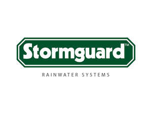

Trade Mark Journal No.2025/050 12 December 2025
UK00004297724 20 November 2025 (6,20,35)
Mark 1
Stormguard Rainwater Systems
Mark 2

- Class 6
- Rainwater drainage apparatus and systems; rainwater pipes; anti-climb and anti-vandal security rainwater pipes; rainwater pipe lengths; rainwater pipe bends, junctions, branches, offsets, shoes, fixings, support brackets and collars; rodding access pipes; rainwater hoppers of metal; rainwater reservoirs of metal; rainwater traps and covers of metal; rain gutters of metal; roof gutters of metal; guttering for the collection and dispersal of rainwater; corners, outlets and stop ends for rain gutters, roof gutters and guttering; support brackets and jointing clips for rain gutters, roof gutters and guttering; metal drain pipes; metal down pipes; fascias of metal for advertising; soffits and soffit systems; wall capping and brackets therefor; ornamental wall roses; connectors for loose rainwater pipes; spacers for rainwater pipes; drain adaptors; rainwater drainage apparatus and systems of aluminium; rainwater pipes of aluminium; anti-climb and anti-vandal security rainwater pipes of aluminium; rainwater pipe lengths of aluminium; rainwater pipe bends, junctions, branches, offsets, shoes, fixings, support brackets and collars of aluminium; rodding access pipes of aluminium; rainwater hoppers of aluminium; rainwater reservoirs of aluminium; rainwater traps and covers of aluminium; rain gutters of aluminium; roof gutters of aluminium; guttering for the collection and dispersal of rainwater of aluminium; corners, outlets and stop ends for rain gutters, roof gutters and guttering of aluminium; support brackets and jointing clips for rain gutters, roof gutters and guttering of aluminium; drain pipes of aluminium; metal down pipes of aluminium; fascias of aluminum for advertising; soffits and soffit systems of aluminium; wall capping and brackets therefor of aluminium; ornamental wall roses of aluminium; connectors for loose rainwater pipes of aluminium; spacers for rainwater pipes of aluminium; drain adaptors of aluminium; aluminium flat sheets; aluminium l-trims; aluminium treadplates; aluminium; folded aluminium; parts and fittings for all the aforesaid goods.
- Class 20
- Mild steel table legs; mild steel furniture; mild steel furniture pieces; mild steel brackets; mild steel flat sheets; parts and fittings for all the aforesaid goods.
- Class 35
- Retail services in relation to common metals and their alloys, ores, metal materials for building and construction, transportable buildings of metal, non-electric cables and wires of common metal, small items of metal hardware, metal containers for storage or transport, safes, building and construction materials and elements of metal, rainwater drainage apparatus and systems, rainwater pipes, anti-climb and anti-vandal security rainwater pipes, rainwater pipe lengths, rainwater pipe bends, junctions, branches, offsets, shoes, fixings, support brackets and collars, rodding access pipes, rainwater hoppers of metal, rainwater reservoirs of metal, rainwater traps and covers of metal, rain gutters of metal, roof gutters of metal, guttering for the collection and dispersal of rainwater, corners, outlets and stop ends for rain gutters, roof gutters and guttering, support brackets and jointing clips for rain gutters, roof gutters and guttering, metal drain pipes, metal down pipes, fascias of metal for advertising, soffits and soffit systems, wall capping and brackets therefor, ornamental wall roses, connectors for loose rainwater pipes, spacers for rainwater pipes, drain adaptors, rainwater drainage apparatus and systems of aluminium, rainwater pipes of aluminium, anti-climb and anti-vandal security rainwater pipes of aluminium, rainwater pipe lengths of aluminium, rainwater pipe bends, junctions, branches, offsets, shoes, fixings, support brackets and collars of aluminium, rodding access pipes of aluminium, rainwater hoppers of aluminium, rainwater reservoirs of aluminium, rainwater traps and covers of aluminium, rain gutters of aluminium, roof gutters of aluminium, guttering for the collection and dispersal of rainwater of aluminium, corners, outlets and stop ends for rain gutters, roof gutters and guttering of aluminium, support brackets and jointing clips for rain gutters, roof gutters and guttering of aluminium, drain pipes of aluminium, metal down pipes of aluminium, fascias of aluminum for advertising, soffits and soffit systems of aluminium, wall capping and brackets therefor of aluminium, ornamental wall roses of aluminium, connectors for loose rainwater pipes of aluminium, spacers for rainwater pipes of aluminium, drain adaptors of aluminium, aluminium flat sheets, aluminium l-trims, aluminium treadplates, aluminium, folded aluminium, containers, and transportation and packaging articles, of metal, doors, gates, windows and window coverings of metal, hardware of metal, small, ironmongery, metal hardware, metal ironmongery, structures and transportable buildings of metal, unprocessed and semi-processed non-precious metals and their alloys, works of art and decorations, including sculptures, made primarily of non-precious metals, furniture, mirrors, picture frames, mild steel table legs, mild steel furniture, mild steel furniture pieces, mild steel brackets, mild steel flat sheets, containers, not of metal, for storage or transport, unworked or semi-worked bone, horn, whalebone or mother-of-pearl, shells, meerschaum, yellow amber, animal housing and beds, containers, and closures and holders therefor, non-metallic, displays, stands and signage, non-metallic, ladders and movable steps, non-metallic, unworked and semi-worked bone, shell, amber, reed, bamboo, rattan or cork, or substitutes for these, works of art and decorations, including sculptures, made primarily of wood, straw, bone, shell, wax, resin, plastics or plaster, or of substitutes for these, parts and fittings for all the aforesaid goods; online retail services in relation to common metals and their alloys, ores, metal materials for building and construction, transportable buildings of metal, non-electric cables and wires of common metal, small items of metal hardware, metal containers for storage or transport, safes, building and construction materials and elements of metal, rainwater drainage apparatus and systems, rainwater pipes, anti-climb and anti-vandal security rainwater pipes, rainwater pipe lengths, rainwater pipe bends, junctions, branches, offsets, shoes, fixings, support brackets and collars, rodding access pipes, rainwater hoppers of metal, rainwater reservoirs of metal, rainwater traps and covers of metal, rain gutters of metal, roof gutters of metal, guttering for the collection and dispersal of rainwater, corners, outlets and stop ends for rain gutters, roof gutters and guttering, support brackets and jointing clips for rain gutters, roof gutters and guttering, metal drain pipes, metal down pipes, fascias of metal for advertising, soffits and soffit systems, wall capping and brackets therefor, ornamental wall roses, connectors for loose rainwater pipes, spacers for rainwater pipes, drain adaptors, rainwater drainage apparatus and systems of aluminium, rainwater pipes of aluminium, anti-climb and anti-vandal security rainwater pipes of aluminium, rainwater pipe lengths of aluminium, rainwater pipe bends, junctions, branches, offsets, shoes, fixings, support brackets and collars of aluminium, rodding access pipes of aluminium, rainwater hoppers of aluminium, rainwater reservoirs of aluminium, rainwater traps and covers of aluminium, rain gutters of aluminium, roof gutters of aluminium, guttering for the collection and dispersal of rainwater of aluminium, corners, outlets and stop ends for rain gutters, roof gutters and guttering of aluminium, support brackets and jointing clips for rain gutters, roof gutters and guttering of aluminium, drain pipes of aluminium, metal down pipes of aluminium, fascias of aluminum for advertising, soffits and soffit systems of aluminium, wall capping and brackets therefor of aluminium, ornamental wall roses of aluminium, connectors for loose rainwater pipes of aluminium, spacers for rainwater pipes of aluminium, drain adaptors of aluminium, aluminium flat sheets, aluminium l-trims, aluminium treadplates, aluminium, folded aluminium, containers, and transportation and packaging articles, of metal, doors, gates, windows and window coverings of metal, hardware of metal, small, ironmongery, metal hardware, metal ironmongery, structures and transportable buildings of metal, unprocessed and semi-processed non-precious metals and their alloys, works of art and decorations, including sculptures, made primarily of non-precious metals, furniture, mirrors, picture frames, mild steel table legs, mild steel furniture, mild steel furniture pieces, mild steel brackets, mild steel flat sheets, containers, not of metal, for storage or transport, unworked or semi-worked bone, horn, whalebone or mother-of-pearl, shells, meerschaum, yellow amber, animal housing and beds, containers, and closures and holders therefor, non-metallic, displays, stands and signage, non-metallic, ladders and movable steps, non-metallic, unworked and semi-worked bone, shell, amber, reed, bamboo, rattan or cork, or substitutes for these, works of art and decorations, including sculptures, made primarily of wood, straw, bone, shell, wax, resin, plastics or plaster, or of substitutes for these, parts and fittings for all the aforesaid goods; information, advisory and consultancy services relating to the aforesaid.
Allmand-Smith Ltd trading as Stormguard Rainwater Systems
Representative: Stobbs